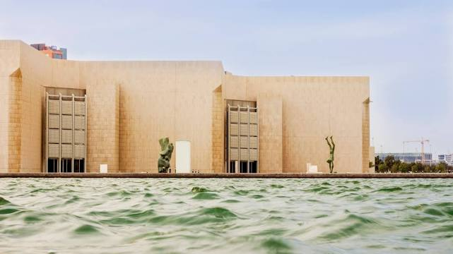
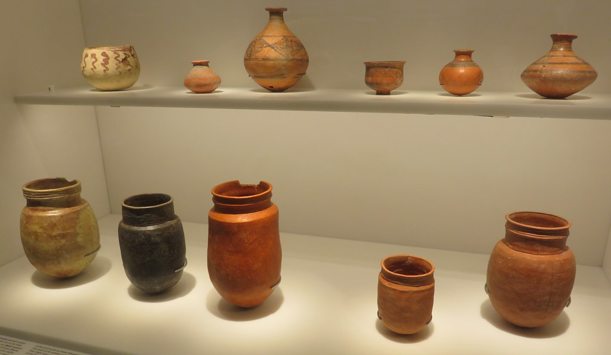
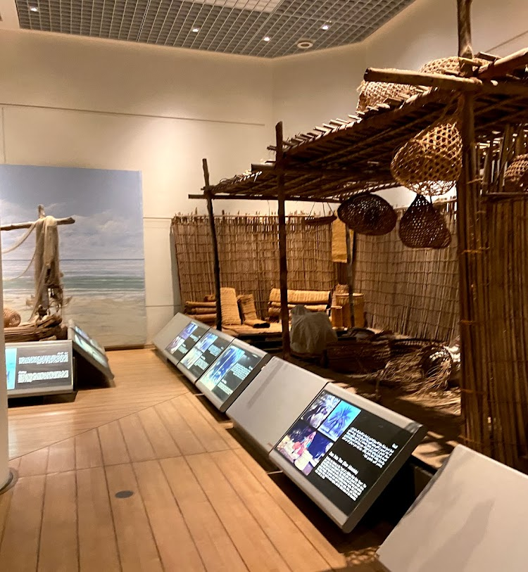
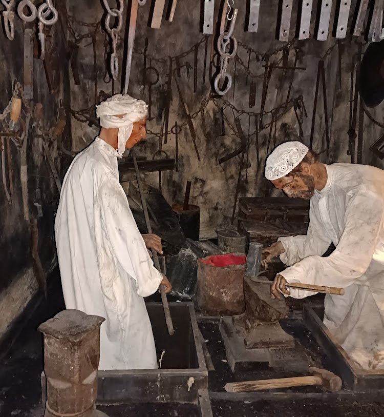

The Bahrain National Museum is the largest and oldest public museum in Bahrain. It is situated in Manama, adjacent to the National Theatre of Bahrain. Opened on 15 December 1988 by the Emir of Bahrain Isa bin Salman Al Khalifa, the $30 million museum complex covers 27,800 sq meters and is the country's most popular tourist attraction. It is believed to be the region's first modern museum.
 